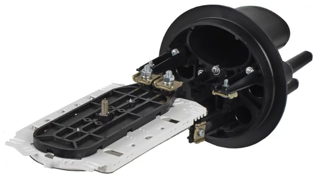

<div class="third text-white">
  <div class="container-fluid">
    <div class="row">
      <div class="col-12 p-0">
        <ngb-carousel #carousel [interval]="2000">
          <ng-template ngbSlide>
            <div class="d-flex align-items-center justify-content-between">
              <div class="img-wrapper">
                
              </div>
              <div class="img-wrapper">
                
              </div>
              <div class="img-wrapper">
                
              </div>
            </div>
          </ng-template>
          <ng-template ngbSlide>
            <div class="d-flex align-items-center justify-content-between">
              <div class="img-wrapper">
                
              </div>
              <div class="img-wrapper">
                
              </div>
              <div class="img-wrapper">
                
              </div>
            </div>
          </ng-template>
          <ng-template ngbSlide>
            <div class="d-flex align-items-center justify-content-between">
              <div class="img-wrapper">
                
              </div>
              <div class="img-wrapper">
                
              </div>
              <div class="img-wrapper">
                
              </div>
            </div>
          </ng-template>
        </ngb-carousel>
      </div>
    </div>
    <h1 class="mt-5 text-center text-primary">
      Особенности работы с инструментами для подключения оптических волокон
    </h1>
    <p data-aos="fade-down" data-aos-duration="1000">
      &nbsp;&nbsp;&nbsp;&nbsp;&nbsp;&nbsp;Оптические муфты широко используются
      при строительстве ВОЛС для соединения и ответвления (подключения клиентов)
      строительных длин (сегментов) оптического кабеля и для проведения
      аварийно-восстановительных работ (АВР): когда произошёл обрыв и его
      необходимо восстановить. Муфты для обеспечивают не только надежную и
      долговременную защиту содержимого от любых внешних воздействий (удары,
      вибрации, экстремальные температуры, влагу и т. д.), но и герметичность
      сварных соединений, и в случае необходимости, электрическое соединение
      металлических элементов вводимых в неё оптических кабелей.
    </p>
    <p data-aos="fade-down" data-aos-duration="1000">
      &nbsp;&nbsp;&nbsp;&nbsp;&nbsp;&nbsp;Оптические муфты имеют несколько
      разновидностей вводов (патрубков): механический ввод, специальный ввод и
      ввод под термоусаживаемую трубку. В первом случае вводится в специальный
      патрубок, задействуются уплотнительные элементы или фитинги — это холодный
      способ монтажа.
    </p>
    <p data-aos="fade-down" data-aos-duration="1000">
      &nbsp;&nbsp;&nbsp;&nbsp;&nbsp;&nbsp;При проведении работ от разделки
      оптического кабеля до готовой (смонтированной) муфты, требуется соблюдать
      технологию на всех этапах монтажа. В инструкции на оптическую муфту и
      комплект ввода четко прописана последовательность всех действий и
      операций. Это касается вводимого оптического кабеля (длина разделки, длина
      отреза брони, ЦСЭ и т. д.), оптической муфты (способы укладки и фиксации
      элементов ОК, правильная нумерации КДЗС на ложементе кассет и т. д.) и
      комплектов ввода (крепление элементов ОК, фиксация и т. д.).
    </p>
    <p data-aos="fade-down" data-aos-duration="1000">
      &nbsp;&nbsp;&nbsp;&nbsp;&nbsp;&nbsp;При работе с инструментом,
      электрическим феном (газовой горелкой) и другим оборудованием и материалом
      необходимо строго соблюдать технику безопасности и охрану труда. Всегда
      пользоваться средствами индивидуальной защиты и производить все работы в
      соответствующей спецодежде и спецобуви.
    </p>
  </div>
</div>
